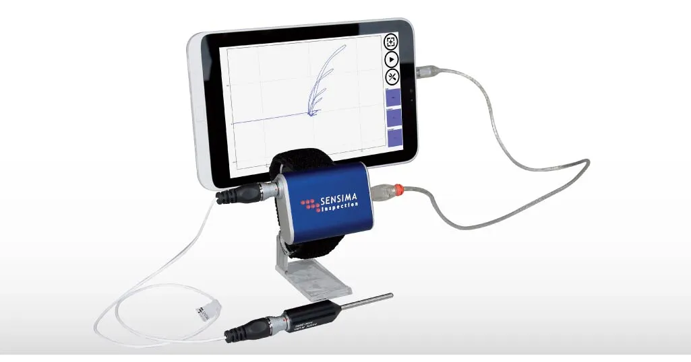
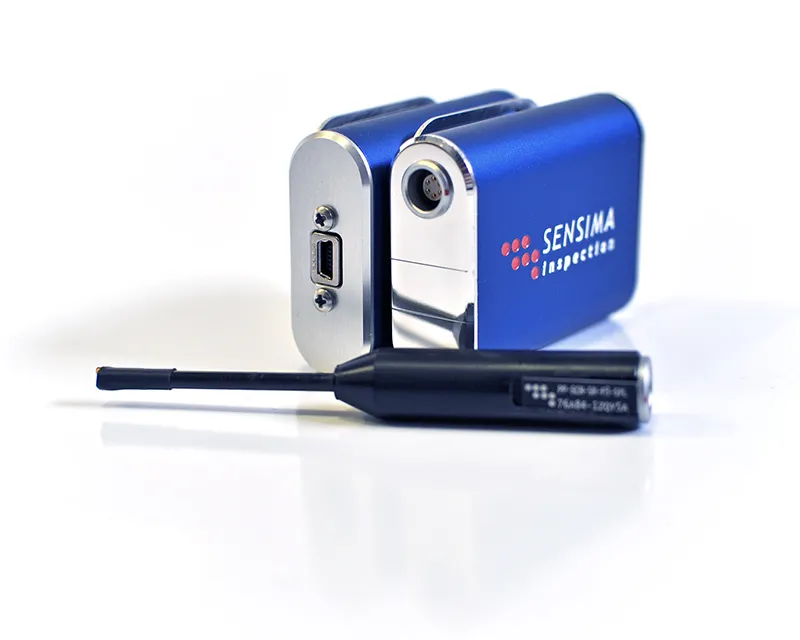
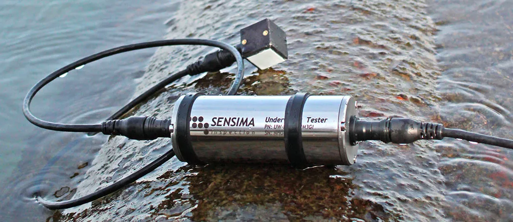
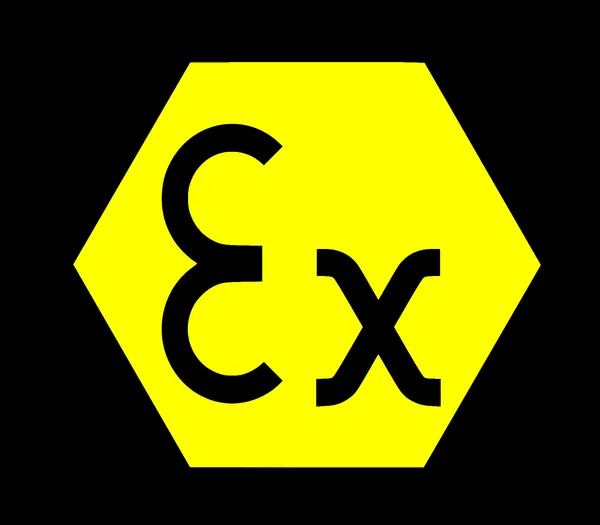
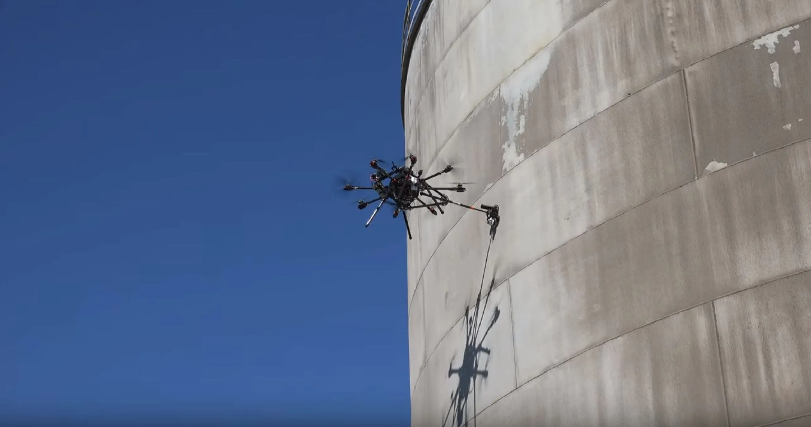

Find the crack before it grows.
Compact eddy current testers and monitoring systems for crack detection, sizing and follow-up in metal parts and structures. Developed in Gland, Switzerland, since 2009.

The instruments
Eddy current (EC) and ultrasonic testing electronics, miniaturised so that the probe, the cable and the tablet are all you carry.
-
UPEC Tester
Surface cracks on metalUltra-portable eddy current USB tester for crack detection on metallic surfaces. Multifrequency, digital communication, powered by a tablet or a USB battery pack; works with a tablet, laptop or rugged computer, over USB or Bluetooth. No proprietary screen or battery.

-
UWEC Tester
Welds, underwaterUnderwater and surface eddy current inspection. Complies with ISO 15548-1:2013 and BS EN ISO 17643:2015 for weld inspection, and approved for weld inspection by major authorities including the American Bureau of Shipping. Signals are processed next to the probe, so robust digital signals reach the surface.

-
UPEX ATEX Zone 0
Oil and gas sitesEddy current tester certified II 1G Ex ia IIC T4, for use where explosive atmospheres are possible.

-
SHMEC System
Bridges, cranesCrack monitoring for structures: sensors that follow a crack over time instead of a single inspection visit.
-
TJEX Rotary scanner
Drill pipe jointsWireless rotary scanner for drill pipe connections, in line with ISO 15548. First field tests took place in the Middle East in January 2022.
-
UW Grid Explorer
Dam gridsUnderwater grid inspection scanner, first used at the Verbois dam.
Product sheets and manuals for each instrument are available on request.
Where it is used
Wherever a crack matters and access is hard: on the rig, under water, on a bridge, from a drone.
- Oil and gasAsset integrity, drill pipe connections
- Bridges and cranesStructural health monitoring
- HydropowerPenstocks and dam grids
- Gas turbinesCrack sensors for rotor grooves
- Aerial dronesContact NDT with miniaturised sensors

From EPFL to the field
Sensima Inspection is a high-tech company founded in 2009 as a spin-off of the Swiss Federal Institute of Technology (EPFL). It develops electromagnetic non-destructive testing and quality-control solutions.
Its strengths: eddy current and ultrasonic testing, miniaturised electronics and integrated circuit design, multichannel EC systems, underwater EC and rotary scanners.
- 2009Founded as an EPFL spin-off.
- 2016SEDECT SA, security metal detectors developed with Geneva Airport.
- 2017AIMsight Sàrl, condition-based maintenance and digital asset integrity management.
- 2023AUTOASSESS, a Horizon Europe project: Sensima supplies miniaturised NDT sensors for inspection drones.
Partners include SGS, Hydro Exploitation, Alstom Inspection Robotics, SIGS and ALPIQ.
Ask about an instrument
Tell us the part, the material and where it sits. We will tell you which instrument fits.
Route de Cité-Ouest 2
CH-1196 Gland, Switzerland +41 22 364 49 20 info@sensima.ch